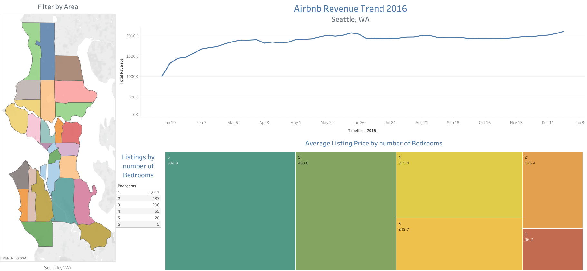

Overview
This project aims to identify optimal locations and property types for starting an Airbnb business by analyzing trends in pricing, revenue, and competition across different zip codes and time periods. The goal is to provide actionable insights to help potential hosts make informed decisions about where to invest and what types of properties are likely to be the most profitable in the Airbnb market.
Dataset
This project utilizes the Seattle Airbnb Open Data, which provides insights into the Airbnb activity in Seattle, WA. The dataset includes listings, reviews, and calendar data, offering a comprehensive view of Airbnb operations in the city. This data is part of the Airbnb Inside initiative and can be accessed for further exploration and analysis. The original source of the dataset can be found here.
The dataset consists of the following tables:
- Listings: Detailed property and host information.
- Reviews: User feedback and review timestamps.
- Calendar: Availability and pricing information over time.
Key Insights Delivered
- Price Trends: We visualized average Airbnb prices across various zip codes using both bar charts and an interactive map. This allowed us to identify the most lucrative areas for potential Airbnb investments, revealing regions with high revenue opportunities and optimal pricing strategies.
- Revenue Trends: We analyzed total Airbnb revenue throughout the year, focusing on key trends such as seasonality and peak booking periods. This analysis helped uncover patterns in booking demand, allowing hosts to optimize pricing strategies and anticipate high-traffic seasons.
- Pricing vs. Property Features: This insight delved into how Airbnb pricing varies based on property features, particularly the number of bedrooms. By understanding this relationship, potential hosts can better select the property type that aligns with their investment goals, balancing cost with potential revenue.
- Competition Analysis: We assessed the distribution of Airbnb listings by bedroom count to gauge market saturation. This analysis revealed areas with high competition, helping potential hosts identify underserved locations with fewer listings for a competitive advantage.
Methodology
- Data was cleaned and joined using Tableau, connecting the Listings and Calendar sheets via unique listing IDs.
- Created multiple interactive visualizations:
- Bar Charts: Show average prices by zip code.
- Maps: Display pricing geographically.
- Time Series: Track revenue trends over weeks.
- Scatter Plots: Compare pricing across property types.
- Tables: Highlight listing competition by property size.
- Integrated all visualizations into a comprehensive dashboard for easy exploration and decision-making.
Outcome
This project provides actionable insights into the best-performing Airbnb locations, pricing strategies, and ideal property features, offering a data-driven foundation for starting an Airbnb business.

Dashboard